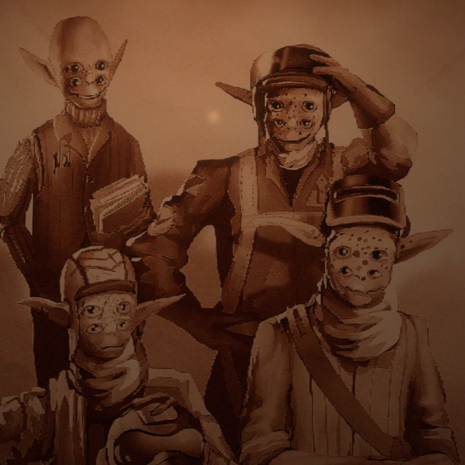

Unfold the Nomai History
Step into the enigmatic and ancient world of the Nomai, a species driven by an insatiable thirst for knowledge and discovery.
Through their writings, artifacts, and profound connections to the cosmos, the Nomai have left a legacy that continues to inspire
explorers across the stars.
On this page, you'll find an introduction to the language of the Nomai, a unique script that bridges the past and present.
Decode their messages, uncover their philosophical musings, and connect with their timeless pursuit of understanding the universe.
Don't miss the video on the history of the Nomai, a fascinating look into their culture, technology, and eventual fate.
This visual journey sheds light on their greatest achievements and the mysteries they sought to solve.
Nomai Language
The language of the Nomai is a fascinating and complex script that reflects their advanced intellect and interconnected way of thinking.
Unlike traditional linear writing, the Nomai language is composed of swirling, branching glyphs that represent thoughts and ideas flowing
in multiple directions at once.
This unique structure allows their writing to convey not only information but also context and relationships between ideas.
Each Nomai message is more than just words—it's a network of meaning that reveals their philosophical depth and their collaborative approach
to problem-solving.
The glyphs are often found etched into ancient surfaces like stone tablets, walls, and Nomai artifacts scattered across the solar system.
These inscriptions provide invaluable insights into their culture, science, and existential questions about the universe.
The Hearthians

The Hearthians are a warm, curious, and inventive species native to Timber Hearth. Despite their humble beginnings,
they have achieved remarkable advancements in space exploration, creating the Outer Wilds Ventures program to explore the stars.
Their close-knit community thrives on collaboration, music, and storytelling.
Hearthians have a unique perspective on the universe, valuing the connections between people and places. They live for discovery,
celebrating every step of their journey with songs, laughter, and camaraderie. Whether it's roasting marshmallows by the campfire
or piloting makeshift spacecraft, their spirit of adventure is unmatched.
The Nomai
The Nomai are an ancient, sophisticated species who once roamed the universe in pursuit of knowledge and understanding. Driven by
their insatiable curiosity, they constructed intricate technologies and left behind ruins that still puzzle explorers today.
The Nomai were masterful engineers and scientists, crafting devices like the Quantum Moon Locator and the
Orbital Probe Cannon. Their writings, found etched on walls and tablets, reveal their philosophical nature and
their profound dedication to understanding the nature of existence.
Though their fate remains a mystery, the Nomai's legacy lives on in the stories and discoveries they left behind. They remind us of
the endless pursuit of knowledge and the interconnectedness of all life.